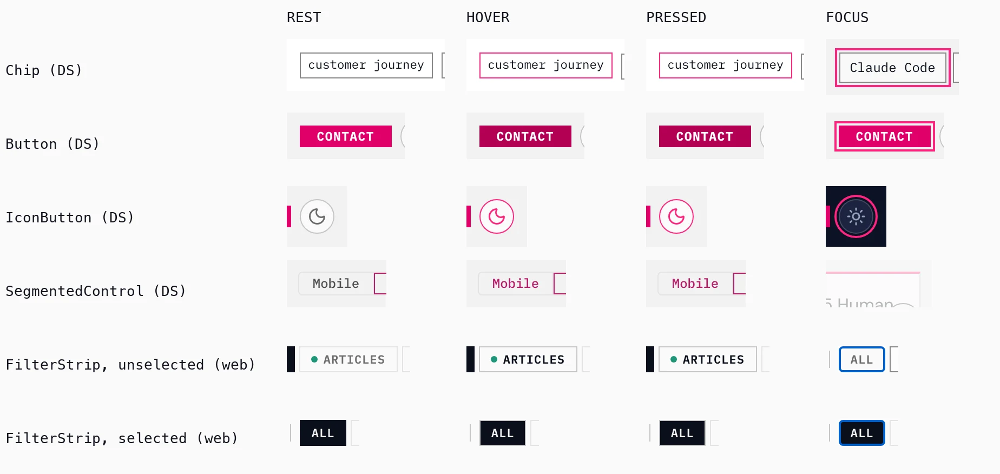
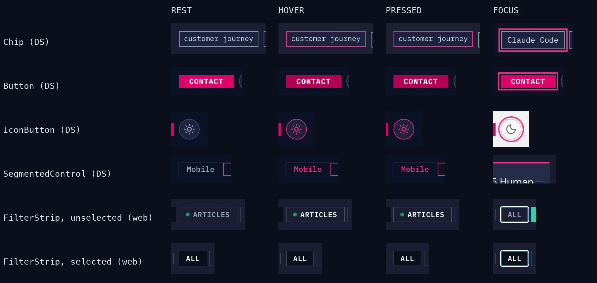
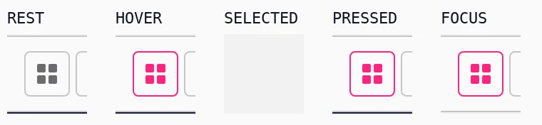
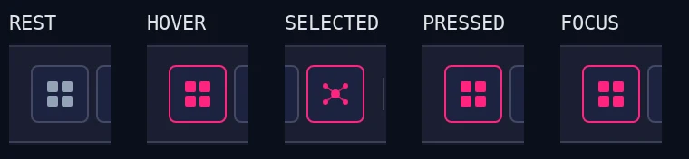

ST-251 · DS interaction state contract
Issue #251, from the audit in #250. Phase 0 visual spec. Class names are the production names. Values are tokens unless marked.
apps/web/src/ or packages/design-system/src/ changes until the Phase 0 boxes are ticked. Open decisions are in section 9.1. Interactive prototype
The Behaviour dropdown shows all five states or one at a time. The matrix forces each state so it can be seen without hovering. The row at the end uses the real browser states: hover, press and Tab to try them. Use the toggle above for dark.
Live row (real hover, press and keyboard focus)
FilterStrip rebuilt from Badge and Badge — Color Dot
2. Before and after




Section 1: five states per surface, one hover signal for chips and toggles, one pressed signal, one selected signal, one focus ring, light and dark.
3. Behaviour annotations
Applies to the FilterStrip, the one tab-bar-like surface in scope.
| Item | Spec |
|---|---|
| Active state | Selected chip is a solid text-default fill with canvas-coloured label (the DS Chip .active look, both themes). The coloured dot stays and carries the type. Today the selected fill is the type colour in dark and a neutral in light. |
| Hash/anchor behaviour | None. A click sets a filter; the URL does not change (same as today). |
| Scroll-spy | None. |
| Sticky/fixed | None; the strip scrolls with the page (same as today). |
| Mobile collapse | Chips wrap onto more lines below the strip width; no collapse (same as today, flex-wrap). |
| Click side-effects | Filters the graph and list, updates the count text (aria-live="polite"). No scroll, no panel (same as today). |
4. Contrast, measured
Measured on this vspec, served locally, 2026-11-22. Text needs 4.5:1, non-text 3:1.
| Pair | Light ratio | Dark ratio | Verdict |
|---|---|---|---|
| Tag rest label | 18.75 | 12.08 | Pass (4.5:1) |
| Tag rest border | 3.44 | 5.09 | Pass (3:1) |
| Hover border (pink) | 3.47 | 4.45 | Pass (3:1) |
| Selected label (Tag) | 17.12 | 17.50 | Pass (4.5:1) |
| Selected label (Badge — Color Dot) | 17.12 | 17.50 | Pass (4.5:1) |
| Pressed label, Tag (with shade) | 14.51 | 8.44 | Pass (4.5:1) |
| Focus ring on canvas | 3.47 | 4.45 | Pass (3:1) |
| Badge rest label | 18.35 | 12.52 | Pass (4.5:1) |
| Type dot, Case, on Badge — Color Dot | 3.28 | 4.70 | Pass (3:1) |
| Button primary label, rest | 4.80 | 4.80 | Pass (4.5:1) |
| Button primary label, pressed (with shade) | 8.13 | 6.00 | Pass (4.5:1) |
| IconButton rest border | 3.44 | 5.09 | Pass (3:1) |
| IconButton rest icon | 5.01 | 6.06 | Pass (3:1) |
| IconButton selected border | 18.35 | 15.17 | Pass (3:1) |
| IconButton selected icon | 17.12 | 17.50 | Pass (3:1) |
| IconButton pressed border | 3.47 | 4.45 | Pass (3:1) |
| SegmentedControl — Icon rest icon | 5.01 | 6.28 | Pass (3:1) |
| SegmentedControl — Icon rest border | 3.44 | 5.09 | Pass (3:1) |
| SegmentedControl — Icon selected border | 18.35 | 15.17 | Pass (3:1) |
| SegmentedControl — Icon selected icon | 17.12 | 17.50 | Pass (3:1) |
| SegmentedControl — Icon hover border | 3.47 | 4.45 | Pass (3:1) |
| SegmentedControl — Icon pressed border | 3.47 | 4.45 | Pass (3:1) |
| SegmentedControl — Pill rest border | 3.44 | 5.09 | Pass (3:1) |
| SegmentedControl — Pill rest text | 5.01 | 6.28 | Pass (4.5:1) |
| SegmentedControl — Pill hover text | 5.01 | 6.28 | Pass (4.5:1) |
| SegmentedControl — Pill hover border | 3.47 | 4.45 | Pass (3:1) |
| SegmentedControl — Pill selected text | 17.12 | 17.50 | Pass (4.5:1) |
| SegmentedControl — Pill selected border | 18.35 | 15.17 | Pass (3:1) |
| SegmentedControl — Pill pressed text | 14.21 | 10.61 | Pass (4.5:1) |
| SegmentedControl — Pill pressed border | 3.47 | 4.45 | Pass (3:1) |
Command: the browser script in docs/conventions/vspec-rules.md (composites every ancestor background over white), run with Playwright against python3 -m http.server served from the repo root, pairs listed above. pnpm validate:contrast does not check pairs a vspec composes itself.
5. Class naming table
| Class | Closest existing pattern | Decision |
|---|---|---|
.chip, .interactive, .active, .ruleDot, .variantTag, .variantStatus | Chip.module.css, same names (Storybook: Tag, Badge, Badge — Color Dot) | Existing. Add :active (pressed) rules only. |
.button, .primary, .secondary, .tertiary | Button.module.css | Existing. Add :active rules only. |
.iconButton | IconButton.module.css | Existing. Add :active rule. |
.iconButtonActive | SegmentedControl .iconBtnActive (same colour and border rule) | New class on IconButton, same values; no new pattern. |
.iconGroup, .iconBtn, .iconBtnActive | SegmentedControl.module.css, same names | Existing. Hover moves to pink to match IconButton; add :active. The page classes .layoutToggleGroup and .layoutToggleBtnActive in pages.module.css are deleted. |
.pillSegment, .pillActive | SegmentedControl.module.css; .iconBtn for the state set | Existing. Segment gets its own 1px chip border and pink hover, selected and pressed like the icon variant; add :active. The group's outer border is removed. |
.strip, .stripLabel, .stripCount | FilterStrip.module.css .strip, .label, .count | Existing layout kept (renamed .label and .count only if the audit asks). .chip, .chipActive and .dot are deleted from FilterStrip.module.css. |
No class is named after a content type. Vspec-only classes use the vspec prefix.
6. Component choice audit
| Surface | What exists | Extend or replace | Why |
|---|---|---|---|
| Chip (Tag, Badge, Badge — Color Dot) | packages/design-system/src/components/Chip: hover, focus-visible, .active, dotColor, rule-dot chassis | Extend | Already has selected and a dot colour. Missing only pressed. No new component. |
| View toggle (ArchivePage, SiteGraphPage) | Three IconButtons plus page class layoutToggleBtnActive; git grep 'variant="icon"' apps/web/src finds no use of the DS icon variant built for exactly this | Replace with SegmentedControl icon variant | Removes a second hand-built selected state. Grid and List navigate to archive routes, so see decision 9. |
| Button, IconButton, SegmentedControl (pill) | DS components with hover and focus-visible | Extend | Add :active; IconButton gains a selected class. |
| FilterStrip | apps/web/src/components/FilterStrip.jsx, own chip, own states | Replace its chip with DS Chip | Chip gives hover, selected, focus and the dot; FilterStrip keeps only layout. The filter chips are Badge and Badge — Color Dot (uppercase bold, rule-dot chassis), the same look as the Storybook Badge stories. Each filter's dot passes dotColor="var(--st-kg-node-…)" to Chip, which already injects it as --chip-dot. |
7. Token list
| Role | Tokens |
|---|---|
| Chip rest | --st-chip-tag-bg, --st-chip-border, --st-chip-fg |
| Hover edge | --st-color-pink (all toggles), --st-color-brand-primary (IconButton and SegmentedControl icon, text), --st-segmented-active-fg (pill text), --st-color-pink-700 (Button primary) |
| Selected | --st-color-text-default (fill), --st-color-bg-canvas (label or icon); --st-segmented-active-fg stays for hover text |
| Pressed (new) | --st-state-pressed-shade: text-default at 12% over the element, drawn as an inset shadow; to be added to tokens/source/tokens.json as a color-mix of existing tokens. Name is open (decision 5). |
| Focus | --st-focus-ring, --st-focus-ring-offset |
| Type dot | --st-kg-node-article, --st-kg-node-case, --st-kg-node-node, --st-chip-dot-size |
| Rest border, IconButton and SegmentedControl icon | --st-chip-border in place of --st-color-border-subtle and --st-index-cell-inactive-color, which measured 1.07:1 to 1.19:1 |
| Retired by decision 2 | --st-kg-chip-*-bg/fg/border (the per-type selected fills); remove with FilterStrip's own chip. |
8. Governance checks
| Check | Applies | Evidence |
|---|---|---|
| Phase 0 trigger (unreviewed visual format) | Yes: new pressed look; FilterStrip selected fill changes in dark | This vspec; Before images dated 2026-11-22 |
| Nav annotations (six) | Yes, FilterStrip | Section 3 |
| Interactive prototype | Yes: filtering and toggle state | Section 1, vanilla JS |
| CSS class reuse audit | Yes | Section 5; one new class, no new patterns |
| Component choice audit | Yes | Section 6; no new component |
| Content Write Gate | No | No Sanity writes |
| Rule-file write gate | No | No rule file changes |
| Diagram red-pen gate | No | No diagram |
9. Decisions answered
An approval of this vspec as drawn takes the recommended answer for every open decision.
- Hover: pink border and soft glow on every toggle. Tag, Badge, Badge — Color Dot, IconButton and the icon variant also lift 1px (no lift under reduced motion). The pill gets glow but no lift, so its joined bar stays aligned. Button keeps its darker fill. Answered as drawn, 2026-11-22.
- Selected on hover: a selected toggle stays at rest on hover (no lift); pink border and glow only, on every toggle. This changes selected Tag and Badge, which lift today. Answered as drawn, 2026-11-22.
- Selected fill: solid text-default for every selected toggle in both themes (Tag, Badge, Badge — Color Dot, IconButton, SegmentedControl icon and pill), with the type colour carried by the dot. Today IconButton and SegmentedControl use a pink outline, and the dark filter strip uses type-coloured fills. Answered as drawn, 2026-11-22, including the filter strip (the teal Articles fill goes). Cost: the view toggle loses its pink selected signal; it also removes the dark pill selected-text failure (#171).
- Pressed: the hover look with the lift removed, plus the 12% shade, on every toggle and on Button. Label stays text-default so the shade never lands under pink text. Answered as drawn, 2026-11-22.
- Focus:
--st-focus-ringon every surface, including FilterStrip. Answered as drawn, 2026-11-22. - Pressed token name:
--st-state-pressed-shade. Answered as drawn, 2026-11-22. - Button selected: not applicable. A Button is not a toggle; toggles use Tag, Badge, IconButton or SegmentedControl. Alternative: add a selected look for
aria-pressedbuttons. Answered as drawn, 2026-11-22. - Other interactive components: Accordion, Breadcrumb, List, Card links, Citation, FilterBar options, IndexCell, Sidebar, Input, Textarea, MediaLabel get the same contract in #252, after this epic. Answered as drawn, 2026-11-22.
- View toggle semantics: Grid and List navigate to archive routes and Graph is the current page, so a radio group is the wrong role. Recommended: the icon variant accepts
hrefper item, renders links in anavwitharia-current="page"on the active one, and keeps radio semantics only when no item has anhref. Cost: a small API addition on SegmentedControl. Answered as drawn, 2026-11-22. - Audit gaps (not confirmed on 2026-11-22): dark Chip keyboard focus, a rendered selected Chip, rendered focus on IconButton, FilterBar and SegmentedControl. The matrix here assumes the CSS reads are right; Phase 1 re-checks them in a rendered probe before merge. Answered 2026-11-22: Phase 1 re-checks them in a rendered probe before merge.
10. Change-specific sections
State matrix by component
| Component | Rest | Hover | Selected | Pressed | Focus-visible |
|---|---|---|---|---|---|
| Tag, Badge, Badge — Color Dot | rule-dot chassis | pink border, soft glow, 1px lift | text-default fill; hover keeps it in place (pink border and glow only) | hover look, no lift, shade | DS ring |
| Button primary | pink-600 fill | pink-700 fill | not a toggle | pink-700 plus shade | DS ring |
| IconButton | muted icon, chip border (was --st-index-cell-inactive-color) | pink icon and border, 1px lift and glow | solid text-default fill, canvas icon (new); hover keeps it in place | pink border plus the 12% shade | DS ring |
| SegmentedControl — Icon | muted icon, chip border (was subtle, 1.07:1) | pink icon and border, 1px lift and glow (was neutral) | solid text-default fill, canvas icon (was pink outline); hover keeps it in place | pink border plus the 12% shade | DS ring |
| SegmentedControl — Pill | muted text, chip border (was no segment border) | pink border and glow, no lift, text unchanged (was pink text only) | solid text-default fill, canvas label (was pink outline); hover keeps it in place | pink border plus the 12% shade | DS ring |
| FilterStrip chip | Badge — Color Dot (rule-dot chassis, uppercase bold, type dot) | as Chip | as Chip | as Chip | DS ring (was browser default) |
11. Phase 0 checklist
- [x] vspec reviewed (2026-11-22)
- [x] class table approved (2026-11-22)
- [x] component choice audit approved (2026-11-22)
- [x] open decisions answered (approved as drawn, 2026-11-22; every open decision takes the answer drawn)